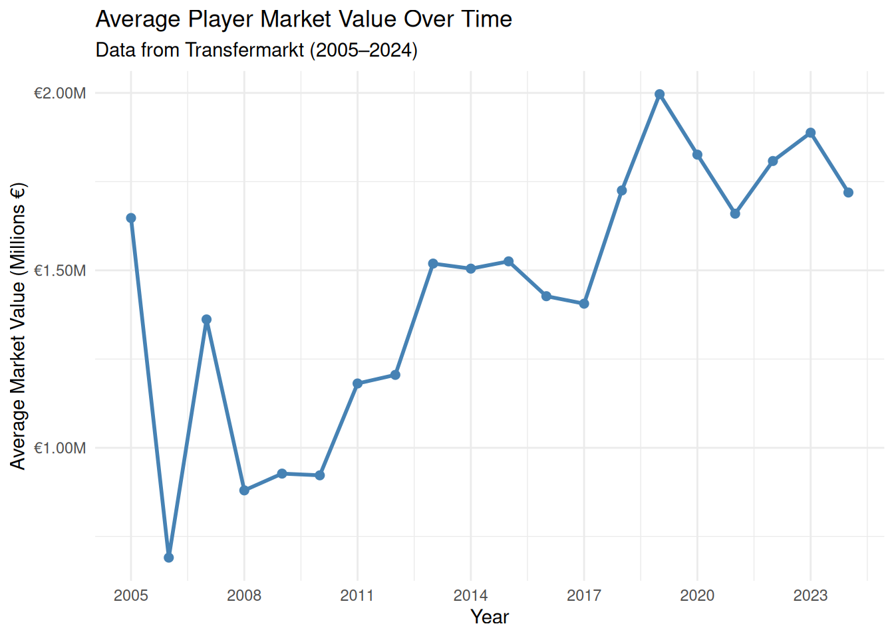
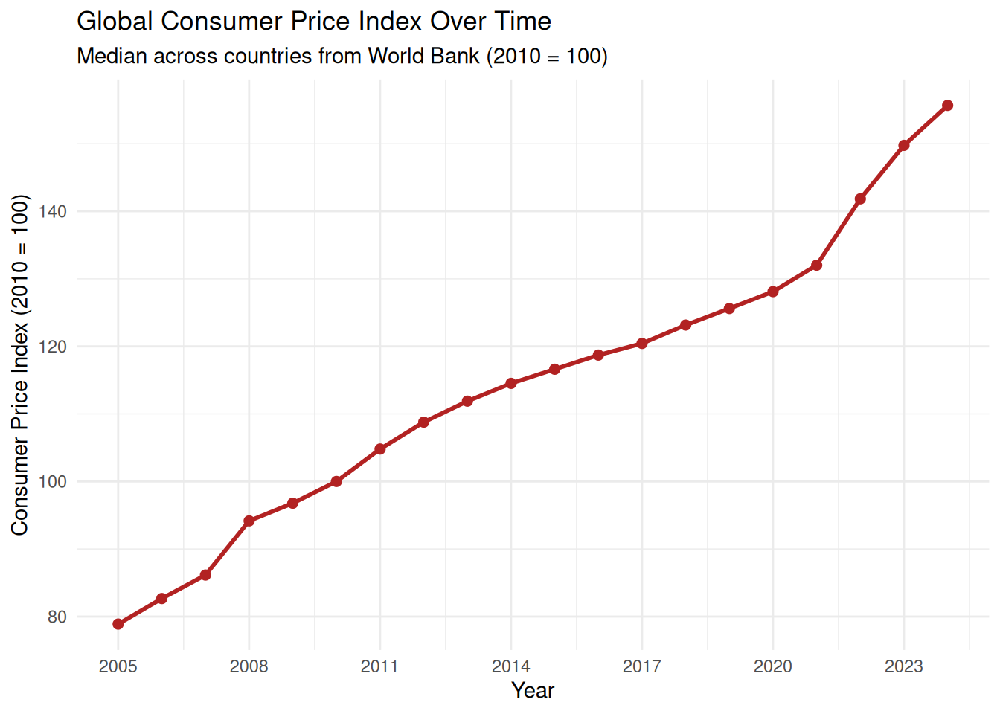
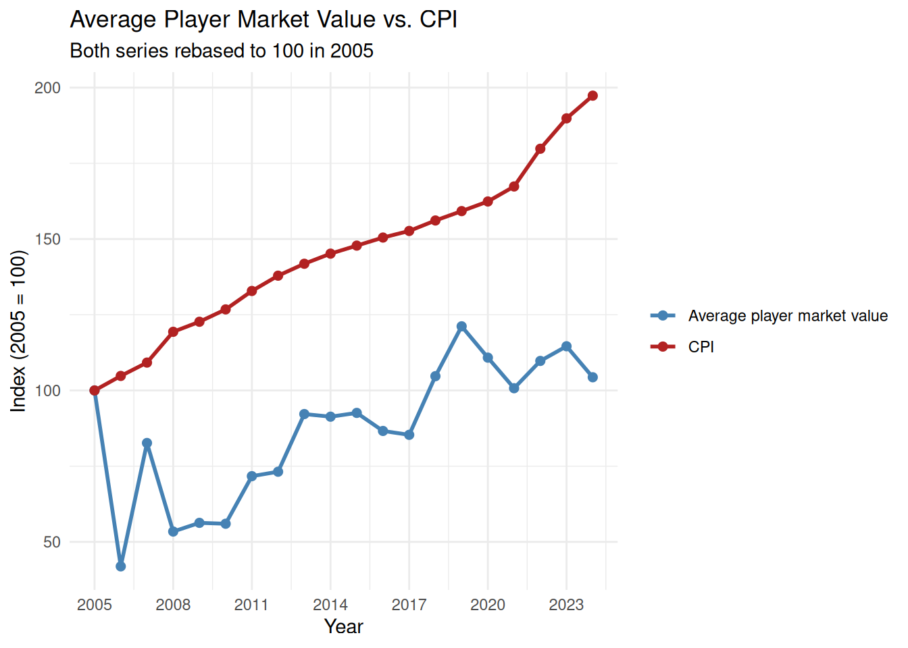
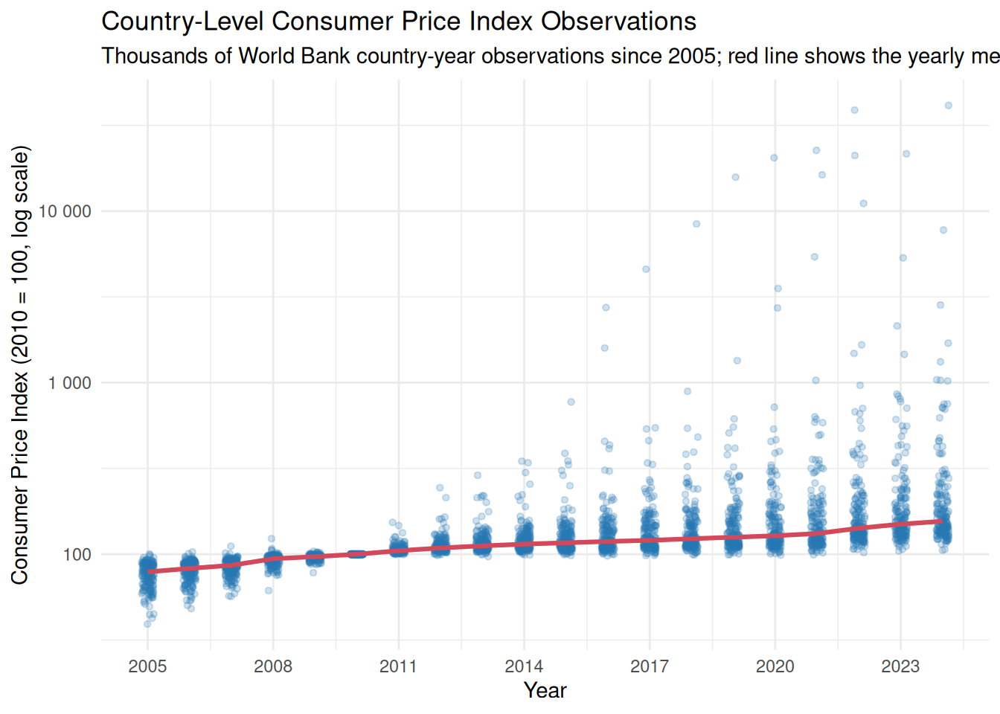

Soccer Players Transfer Values vs. Consumer Price Index
As most kids and teenagers did in 2017, I was scrolling on Instagram looking at a bunch of different soccer/sports pages. Many of those pages would talk about Transfermarkt prices for soccer players. On August 3rd, I saw Neymar was sold to PSG for € 222 million. At this time, that was a world record transfer and was pretty crazy to the soccer community. The highest transfer price before that was less than half, at € 105 million. Because of that, I started to wonder how the prices have changed over time for transfer values relative to the prices of everything in the world/the Consumer Price Index. The Consumer Price Index (CPI) is a measure of the average change over time in the prices paid by urban consumers for a market basket of goods and services, and it is the most widely used indicator of inflation in the United States. In simpler terms, it can also be how much a certain amount of money today could buy you in the years prior. Since 2005, the U.S. CPI has risen from about 195.3 in 2005 to 334.1 in August 2026, reflecting an overall increase of roughly 71% in price. I wanted to make a project with images and data sets to help show other people this relation.
Transfermarkt is a soccer data website that tracks players, clubs, transfers, and estimated market values. The table below uses Transfermarkt data to show the 25 players with the highest estimated market values for each selected year.
Project
Transfer Market Values Over Time
Consumer Price Index Over Time

Average Player Market Value and CPI Since 2005

Consumer Price Index Observations Since 2005

Ballon d’Or Winners and Market Values
The Ballon d’Or is an annual award given to the soccer player judged to have performed the best during the year. It is voted on by journalists from around the world and is one of the most prestigious individual awards in soccer. The table below lists each winner along with their position, club, age, and estimated market value at the time.
| Year | Winner | Position | Club at the time | Age | Market Value |
|---|---|---|---|---|---|
| 2005 | Ronaldinho | Attacking Midfield | Barcelona | 25 | €50.00m |
| 2006 | Fabio Cannavaro | Centre-Back | Real Madrid | 33 | €14.00m |
| 2007 | Kaká | Attacking Midfield | AC Milan | 25 | €70.00m |
| 2008 | Cristiano Ronaldo | Centre-Forward | Manchester United | 23 | €60.00m |
| 2009 | Lionel Messi | Right Winger | Barcelona | 22 | €70.00m |
| 2010 | Lionel Messi | Right Winger | Barcelona | 23 | €100.00m |
| 2011 | Lionel Messi | Right Winger | Barcelona | 24 | €100.00m |
| 2012 | Lionel Messi | Right Winger | Barcelona | 25 | €120.00m |
| 2013 | Cristiano Ronaldo | Centre-Forward | Real Madrid | 28 | €100.00m |
| 2014 | Cristiano Ronaldo | Centre-Forward | Real Madrid | 29 | €120.00m |
| 2015 | Lionel Messi | Right Winger | Barcelona | 28 | €120.00m |
| 2016 | Cristiano Ronaldo | Centre-Forward | Real Madrid | 31 | €110.00m |
| 2017 | Cristiano Ronaldo | Centre-Forward | Real Madrid | 32 | €100.00m |
| 2018 | Luka Modrić | Central Midfield | Real Madrid | 33 | €25.00m |
| 2019 | Lionel Messi | Right Winger | Barcelona | 32 | €140.00m |
| 2021 | Lionel Messi | Right Winger | Paris Saint‑Germain | 34 | €60.00m |
| 2022 | Karim Benzema | Centre-Forward | Real Madrid | 35 | €35.00m |
| 2023 | Lionel Messi | Right Winger | Inter Miami | 36 | €35.00m |
| 2024 | Rodri | Defensive Midfield | Manchester City | 28 | €130.00m |
| 2025 | Ousmane Dembélé | Centre-Forward | Paris Saint‑Germain | 28 | €100.00m |